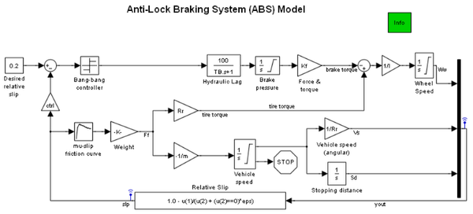

Anti-Lock Braking System (ABS) Model
Contents
Overview
This model is a time-based simulation of an anti-lock braking system (ABS) under hard braking conditions. The simulation stops the car using a bang-bang controller whose goal is to keep the wheel's normalized relative slip near a constant.
Structure
This model is nearly identical to the Time-Based Anti-lock Braking Demo, except that this model is self-contained and does not use the Model block to reference another model. The reason for including this model in the list of SimEvents® demos is to facilitate comparison with related demos that use SimEvents blocks.